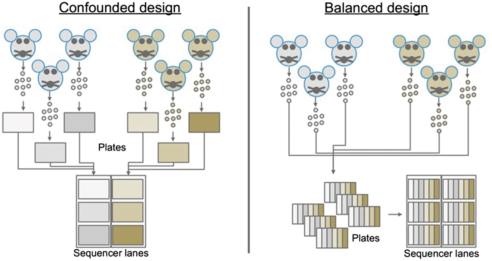
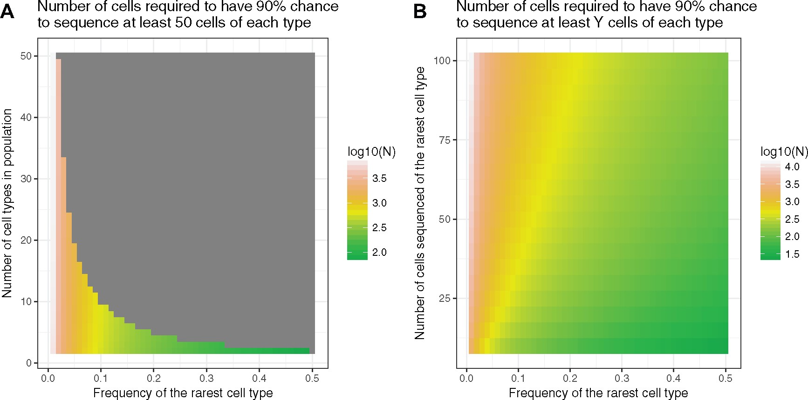
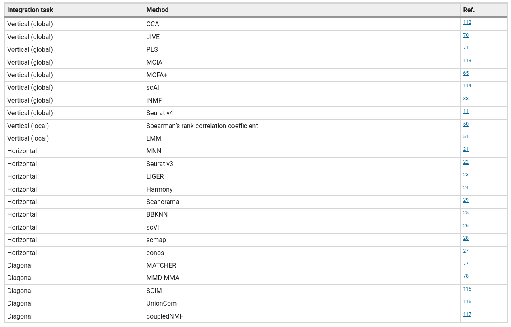
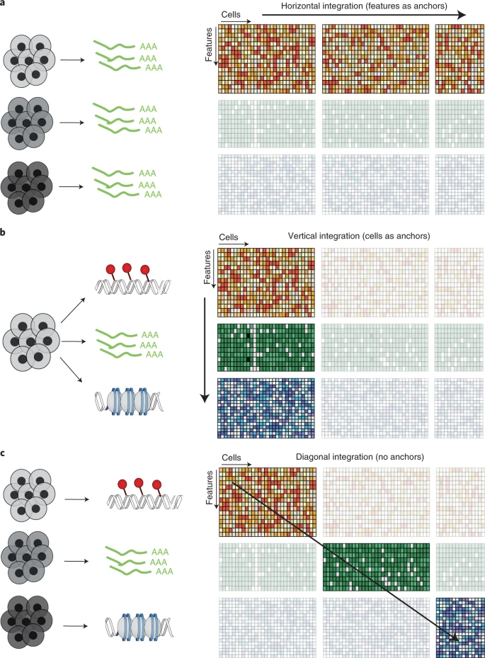
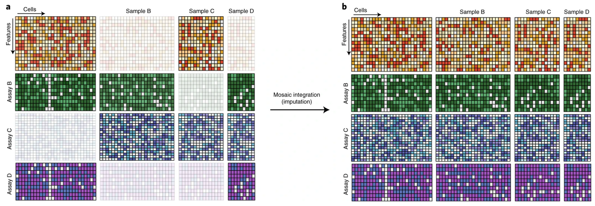

2.1 Overview
Current best practices in scRNA-Seq
- Perform QC by finding outlier peaks in the number of genes, the count depth and the fraction of mitochondrial reads. Consider these covariates jointly instead of separately.
- Be as permissive of QC thresholding as possible, and revisit QC if downstream clustering cannot be interpreted.
- If the distribution of QC covariates differ between samples, QC thresholds should be determined separately for each sample to account for sample quality differences
- We recommend scran for normalization of non-full-length datasets. An alternative is to evaluate normalization approaches via scone especially for plate-based datasets. Full-length scRNA-seq protocols can be corrected for gene length using bulk methods.
- There is no consensus on scaling genes to 0 mean and unit variance. We prefer not to scale gene expression.
- Normalized data should be log(x+1)-transformed for use with downstream analysis methods that assume data are normally distributed.
- Regress out biological covariates only for trajectory inference and if other biological processes of interest are not masked by the regressed out biological covariate.
- Regress out technical and biological covariates jointly rather than serially.
- Plate-based dataset pre-processing may require regressing out counts, normalization via non-linear normalization methods or downsampling.
- We recommend performing batch correction via ComBat when cell type and state compositions between batches are consistent
- Data integration and batch correction should be performed by different methods. Data integration tools may over-correct simple batch effects.
- Users should be cautious of signals found only after expression recovery. Exploratory analysis may be best performed without this step.
- We recommend selecting between 1,000 and 5,000 highly variable genes depending on dataset complexity.
- Feature selection methods that use gene expression means and variances cannot be used when gene expression values have been normalized to zero mean and unit variance, or when residuals from model fitting are used as normalized expression values. Thus, one must consider what pre-processing to perform before selecting HVGs.
- Dimensionality reduction methods should be considered separately for summarization and visualization.
- We recommend UMAP for exploratory visualization; PCA for general purpose summarization; and diffusion maps as an alternative to PCA for trajectory inference summarization.
- PAGA with UMAP is a suitable alternative to visualize particularly complex datasets.
- Use measured data for statistical testing, corrected data for visual comparison of data and reduced data for other downstream analysis based on finding the underlying biological data manifold.
- We recommend clustering by Louvain community detection on a single-cell KNN graph.
- Clustering does not have to be performed at a single resolution. Subclustering particular cell clusters is a valid approach to focus on more detailed substructures in a dataset.
- Do not use marker gene P-values to validate a cell-identity cluster, especially when the detected marker genes do not help to annotate the community. P-values may be inflated.
- Note that marker genes for the same cell-identity cluster may differ between datasets purely due to dataset cell type and state compositions.
- If relevant reference atlases exist, we recommend using automated cluster annotation combined with data-derived marker-gene-based manual annotation to annotate clusters.
- Consider that statistical tests over changes in the proportion of a cell-identity cluster between samples are dependent on one another.
- Inferred trajectories do not have to represent a biological process. Further sources of evidence should be collected to interpret a trajectory.
- DE testing should not be performed on corrected data (denoised, batch corrected, etc.), but instead on measured data with technical covariates included in the model.
- Users should not rely on DE testing tools to correct models with confounded covariates. Model specification should be performed carefully ensuring a full-rank design matrix.
- We recommend using MAST or limma for DE testing.
- Users should be wary of uncertainty in the inferred regulatory relationships. Modules of genes that are enriched for regulatory relationships will be more reliable than individual edges.
Luecken & Theis (2019)
Best practices for single-cell analysis across modalities
Heumos et al. (2023)
What information should be included in an scRNA-Seq publication?
Füllgrabe et al. (2020)
2.2 Experimental design
Experimental Considerations for Single-Cell RNA Sequencing Approaches

Nguyen et al. (2018)
How many reads are needed per cell? Sequencing depth?
Given a fixed budget, sequencing as many cells as possible at approximately one read per cell per gene is optimal, both theoretically and experimentally.
Zhang et al. (2020)
2.2.1 Batch design, number of cells
Avoid technical biases.

Deciding appropriate cell numbers

Baran-Gale et al. (2018)
2.2.2 Sequencing depth
While 250 000 reads per cell are sufficient for accuracy, 1 million reads per cell were a good target for saturated gene detection.
Svensson et al. (2017)
2.3 Mapping and Quantification
2.3.1 CellRanger
Process chromium data
BCL to FASTQ
FASTQ to cellxgene counts
Feature barcoding
2.3.2 Kallisto Bustools
10x, inDrop and Dropseq
Generate cellxgene, cellxtranscript matrix
RNA velocity data
Feature barcoding
QC reports
Melsted et al. (2019)
2.3.3 Salmon Alevin
- Drop-seq, 10x-Chromium v1/2/3, inDropV2, CELSeq 1/2, Quartz-Seq2, sci-RNA-seq3
- Generate cellxgene matrix
- Alevin
2.3.4 Nextflow nf-core rnaseq
- Bulk RNA-Seq, SMART-Seq
- QC, trimming, UMI demultiplexing, mapping, quantification
- cellxgene matrix
- nf-core scrnaseq
2.4 Doublet detection

Xi & Li (2021)
2.5 Cell type identification
Identification of cell types can be completely automated (by comparing to reference data/databases) or semi-automated (reference data + marker genes).

2.6 Differential expression
- Comparison of DGE tools for single-cell data
All of the tools perform well when there is no multimodality or low levels of multimodality. They all also perform better when the sparsity (zero counts) is less. For data with a high level of multimodality, methods that consider the behavior of each individual gene, such as DESeq2, EMDomics, Monocle2, DEsingle, and SigEMD, show better TPRs. If the level of multimodality is low, however, SCDE, MAST, and edgeR can provide higher precision.
In general, the methods that can capture multimodality (non-parametric methods), perform better than do the model-based methods designed for handling zero counts. However, a model-based method that can model the drop-out events well, can perform better in terms of true positive and false positive. We observed that methods developed specifically for scRNAseq data do not show significantly better performance compared to the methods designed for bulk RNAseq data; and methods that consider behavior of each individual gene (not all genes) in calling DE genes outperform the other tools.

Wang et al. (2019)
- Differential expression without clustering or grouping
- singleCellHaystack
2.7 Data Integration
- Single-cell data integration challenges



Argelaguet et al. (2021)
- Comparison of data integration methods


Luecken et al. (2022)

We tested 14 state-of-the-art batch correction algorithms designed to handle single-cell transcriptomic data. We found that each batch-effect removal method has its advantages and limitations, with no clearly superior method. Based on our results, we found LIGER, Harmony, and Seurat 3 to be the top batch mixing methods. Harmony performed well on datasets with common cell types, and also different technologies. The comparatively low runtime of Harmony also makes it suitable for initial data exploration of large datasets. Likewise, LIGER performed well, especially on datasets with non-identical cell types. The main drawback of LIGER is its longer runtime than Harmony, though it is acceptable for its performance. Seurat 3 is also able to handle large datasets, however with 20–50% longer runtime than LIGER. Due to its good batch mixing results with multiple batches, it is also recommended for such scenarios. To improve recovery of DEGs in batch-corrected data, we recommend scMerge for batch correction.
Tran et al. (2020)
2.8 Trajectory


Saelens et al. (2019)
- Tempora Trajectory inference for time-series data
2.9 RNA velocity
2.10 Databases
2.10.1 Data
Single-cell data repositiories.
2.10.2 Markers
Curated list of marker genes by organism, tissue and cell type.
2.11 Interactive visualisation frameworks
- ShinyCell(R Shiny)
- Cerebro(R Shiny)
- Vitessce(R, Python)
- CDCP
- SingleCellVR

Ouyang et al. (2021)

Cakir et al. (2020)